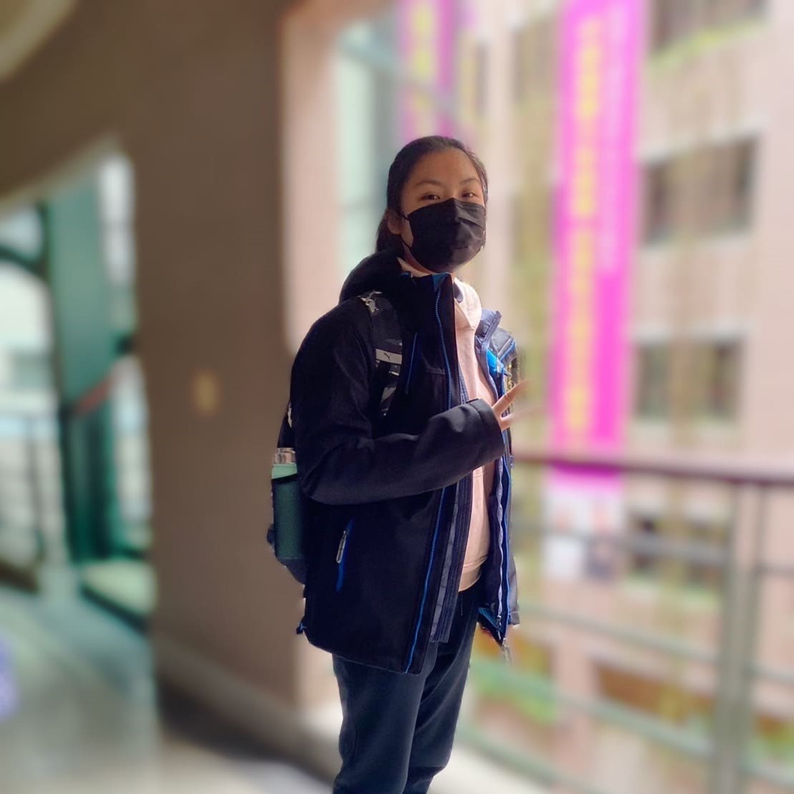
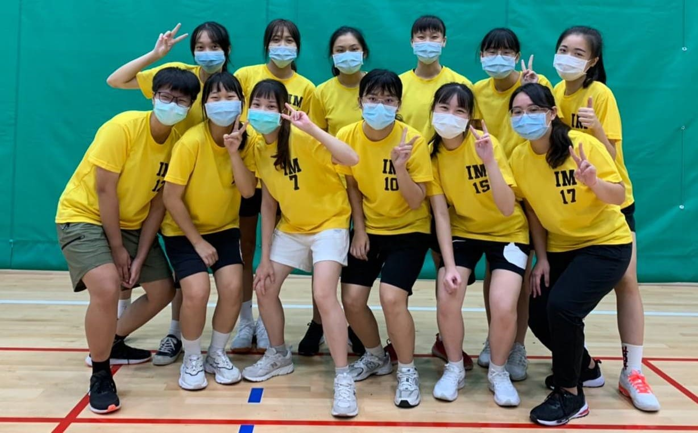
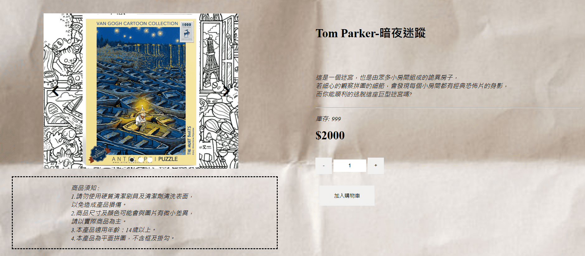

張宜樺's 個人資料
個性 | 開朗、實事求是、有點懶
興趣 | 溜直排輪、打排球、看漫畫
學歷 | 中原大學資訊管理學系在學中
- When life gives you lemons, make lemonade. -
個人技能
- Python
- Java
- MySQL
- html
- css
個人經歷
大一

新生盃
上大學後，我第一個參加有關學校於的活動就是新生盃，除了開啟了我對於排球的熱愛之外，我也從這次新生盃中結交了許多朋友。雖然這次沒有得到任何名次，但是個令我難忘的回憶。
大二

網路程式設計-後端
我們這次做的是後端的部分，需要從網頁連接到資料庫，讓會員資料、產品資料等可以順利與網頁連結，並且能夠在後台查詢到每個狀況。
大資盃
為期兩天一夜的高雄大資盃之旅，從坐車開始就是一大挑戰，再加上適逢清明連假，讓我當初猶豫是否要報名參加，但是在經歷這兩天的比賽後，我不後悔我當初的決定，而這次的比賽我覺得也算是測試我這一年多來練球的成果，在這過程中收穫了許多也跟大家一起創造出美好的回憶。